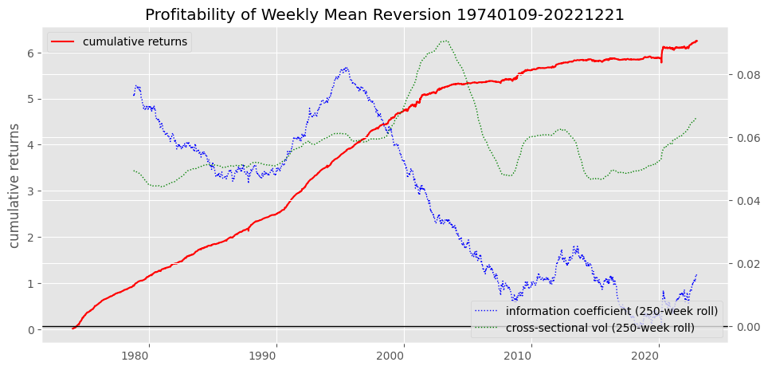
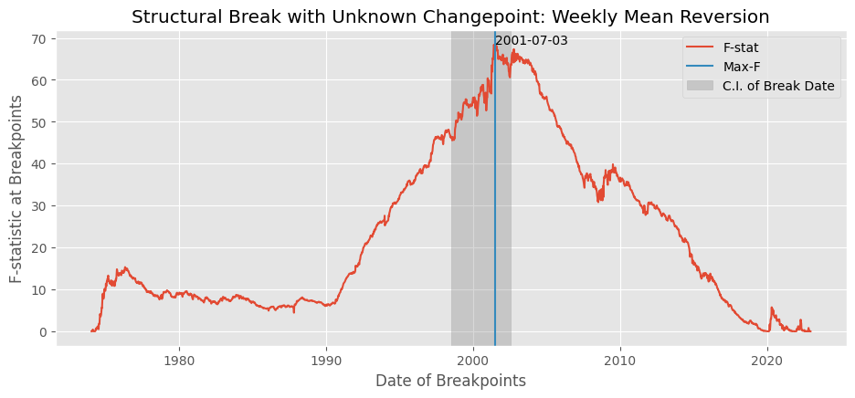

Weekly reversal#
UNDER CONSTRUCTION
Contrarian trading (Lo and Mackinlay 1990, and others), mean reversion
implementation shortfall
structural break with unknown changepoint
import numpy as np
import pandas as pd
from pandas import DataFrame, Series
from tqdm import tqdm
import matplotlib.pyplot as plt
import rpy2.robjects as ro
from rpy2.robjects.packages import importr
from finds.database import SQL, RedisDB
from finds.busday import BusDay
from finds.structured import CRSP, Benchmarks
from finds.backtesting import fractiles
from finds.econs import lm
from finds.misc import PyR, row_formatted, Show
from secret import credentials, paths, CRSP_DATE
show = Show(ndigits=4, latex=None)
VERBOSE = 0 # 1
#%matplotlib qt
# open connections
sql = SQL(**credentials['sql'], verbose=VERBOSE)
rdb = RedisDB(**credentials['redis'])
bd = BusDay(sql, verbose=VERBOSE)
crsp = CRSP(sql, bd, rdb=rdb, verbose=VERBOSE)
bench = Benchmarks(sql, bd)
imgdir = paths['images']
Construct weekly reversal
Retrieve weekly returns, standardize scores, and compute returns and i.c.
weekday = 3 # wednesday close-to-close
bd = BusDay(sql, endweek=weekday) # Generate weekly cal
begweek = 19740102 # increased stocks coverage in CRSP in Jan 1973
middate = 19851231 # increased stocks traded in CRSP around this date
endweek = bd.endwk(CRSP_DATE, -1)
rebaldates = bd.date_range(begweek, endweek, freq='weekly')
retdates = bd.date_tuples(rebaldates)
june_universe = 0 # to track when reached a June end to update universe
year = 0 # to track new year to retrieve prices in batch
results = []
lagged_weights = Series(dtype=float) # to track "turnover" of stock weights
Last FamaFrench Date 2023-04-28 00:00:00
Loop over weekly rebalance dates
for rebaldate, pastdates, nextdates in tqdm(zip(rebaldates[1:-1],
retdates[:-1],
retdates[1:])):
# screen universe each June: largest 5 size deciles
d = bd.june_universe(rebaldate)
if d != june_universe: # need next June's universe
june_universe = d # update universe every June
univ = crsp.get_universe(june_universe) # usual CRSP universe screen
univ = univ[univ['decile'] <= 9] # drop smallest half stocks
# retrieve new annual batch of daily prices and returns when start year
if bd.begyr(rebaldate) != year:
year = bd.begyr(rebaldate)
prc = crsp.get_range(dataset='daily',
fields=['bidlo', 'askhi', 'prc', 'retx', 'ret'],
date_field='date',
beg=year,
end=bd.offset(bd.endyr(year), 10),
cache_mode="rw")
# get past week's returns, require price at start of week
past_week = prc[prc.index.get_level_values('date') == rebaldate]['prc']\
.reset_index()\
.set_index('permno')\
.join(crsp.get_ret(*pastdates).reindex(univ.index))\
.dropna()
# convert past week's minus returns to standardized weights in portfolio
weights = ((past_week['ret'].mean() - past_week['ret']) /
(past_week['ret'].std(ddof=0) * len(past_week)))
# turnover = total abs change in stock weight, scaled by total abs weight
chg_weights = pd.concat([weights, -lagged_weights], axis=1)\
.fillna(0)\
.sum(axis=1)
total_weight = weights.abs().sum() + lagged_weights.abs().sum()
lagged_weights = weights
# get next week's returns
next_week = crsp.get_ret(*nextdates).reindex(past_week.index).fillna(0)
# get next day's closing prices (or bid-ask quotes), to compute one-day delay cost
next_day = prc[prc.index.get_level_values('date') ==
bd.offset(rebaldate, 1)]\
.reset_index()\
.set_index('permno')\
.drop(columns='date')\
.reindex(chg_weights.index)
avgprc = next_day[['bidlo', 'askhi', 'prc']].abs().mean(axis=1)
# if no trade next day, then enter position at askhi (long) or bidlo (short)
bidask = next_day['askhi'].where(weights > 0, next_day['bidlo']).abs()
avgprc = next_day['prc'].where(next_day['prc'] > 0, bidask)
# delay slippage (positive is cost) = weights chg * drift of next day price
drift = avgprc.div(next_day['prc'].abs())\
.mul(1 + next_day['ret'])\
.sub(1)\
.fillna(0)
# accumulate weekly computations
results.append(DataFrame({'ret': weights.dot(next_week),
'ic': weights.corr(next_week),
'n': len(next_week),
'beg': nextdates[0],
'end': nextdates[1],
'absweight': np.sum(weights.abs()),
'turnover': chg_weights.abs().sum()/total_weight,
'vol': next_week.std(ddof=0),
'delay': chg_weights.dot(drift)},
index=[rebaldate]))
# Combine accumulated weekly computations
df = pd.concat(results, axis=0)
dates = df.index
df.index = pd.DatetimeIndex(df.index.astype(str))
# Show summary
cols = ['ic' ,'vol', 'ret', 'delay', 'turnover']
indexes = ['Information coefficient', 'Cross-sectional Volatility',
'Alpha (gross return)', 'Delay cost', 'Portfolio turnover']
show(pd.concat([df[cols].mean(axis=0).rename('mean'),
df[cols].std(axis=0).rename('std')],
axis=1).set_index(pd.Index(indexes)),
caption=f'Summary of Weekly Mean Reversion Strategy {dates[0]}-{dates[-1]}')
2555it [01:13, 34.69it/s]
| mean | std | |
|---|---|---|
| Summary of Weekly Mean Reversion Strategy 19740109-20221221 | ||
| Information coefficient | 0.0398 | 0.0927 |
| Cross-sectional Volatility | 0.0583 | 0.0203 |
| Alpha (gross return) | 0.0024 | 0.0077 |
| Delay cost | 0.0019 | 0.0042 |
| Portfolio turnover | 0.7370 | 0.0384 |
Implementation Shortfall#
decision price
delay
market impact
opportunity cost
Information coefficient#
Grinold rule of thum
alpha = IC time volatility
## Plot returns, and rolling avg information coefficient and cross-sectional vol
fig, ax = plt.subplots(num=1, clear=True, figsize=(10, 5))
df['ret'].cumsum().plot(ax=ax, ls='-', color='r', rot=0)
ax.legend(['cumulative returns'], loc='upper left')
ax.set_ylabel('cumulative returns')
bx = ax.twinx()
roll = 250 # 250 week rolling average ~ 5 years
df['ic'].rolling(roll).mean().plot(ax=bx, ls=':', lw=1, rot=0, color='b')
df['vol'].rolling(roll).mean().plot(ax=bx, ls=':', lw=1, rot=0, color='g')
#bx.axhline(df['ic'].mean(), linestyle='-', color='C0', lw=2)
bx.axhline(0, linestyle='-', color='black', lw=1)
bx.legend([f"information coefficient ({roll}-week roll)",
f"cross-sectional vol ({roll}-week roll)"],
loc='lower right')
ax.set_title(f'Profitability of Weekly Mean Reversion {dates[0]}-{dates[-1]}')
plt.tight_layout(pad=2)
plt.savefig(imgdir / 'weekrev.jpg')

Structural break with unknown changepoint#
Welch/Chow test
Andrews
# Structural Break Test with Unknown Changepoint
importr('strucchange') # R package to use
# Set up data and formulas for R
Y = df['ret']
formula = ro.Formula('y ~ 1')
formula.environment['y'] = PyR(Y.values).ro
# Call R strucchange routines to compute breakpoint statistics
fstats_r = ro.r['Fstats'](formula, **{'from': 1}) # Fstats at every break
breakpoints_r = ro.r['breakpoints'](formula) # candidate breakpoints
confint_r = ro.r['confint'](breakpoints_r, breaks=1) # conf interval for 1 break
sctest_r = ro.r['sctest'](fstats_r, **{'type': 'aveF'})
# Extract output from R results
confint = PyR(confint_r[0]).frame.iloc[0].astype(int) - 1 # R index starts at 1
output = dict(zip(confint.index, df.index[confint])) # confidence interval
for k,v in zip(sctest_r.slots['names'][:3], sctest_r[:3]): # significance values
output[k] = PyR(v).values[0]
output['mean(pre)'] = Y[df.index <= output['breakpoints']].mean()
output['mean(post)'] = Y[df.index > output['breakpoints']].mean()
fstat = [0] + list(PyR(fstats_r[0]).values) + [0, 0] # pad beyond from and to
show(DataFrame(output, index=['sctest']),
caption="Structural break test with unknown changepoint")
| 2.5 % | breakpoints | 97.5 % | statistic | p.value | method | mean(pre) | mean(post) | |
|---|---|---|---|---|---|---|---|---|
| Structural break test with unknown changepoint | ||||||||
| sctest | 1998-07-01 | 2001-07-03 | 2002-07-31 | 23.1675 | 0.0 | aveF test | 0.0035 | 0.001 |
Plot breakpoint F-stats
fig, ax = plt.subplots(num=2, clear=True, figsize=(10, 5))
ax.plot(df.index, fstat, color='C0')
arg = np.nanargmax(fstat)
ax.axvline(df.index[arg], color='C1')
ax.axvspan(df.index[confint[0]], df.index[confint[2]], alpha=0.3, color='grey')
ax.legend(['F-stat', 'Max-F', 'C.I. of Break Date'])
ax.annotate(df.index[arg].strftime('%Y-%m-%d'), xy=(df.index[arg], fstat[arg]))
ax.set_ylabel('F-statistic at Breakpoints')
ax.set_xlabel('Date of Breakpoints')
ax.set_title('Structural Break with Unknown Changepoint: '
'Weekly Mean Reversion')
plt.tight_layout(pad=3)
plt.savefig(imgdir / 'break.jpg')

Compute gross annualized sharpe ratio and delay slippage
market = bench.get_series(permnos=['Mkt-RF'], field='ret').reset_index()
breakpoint = BusDay.to_date(output['breakpoints'])
out = dict()
for select, period in zip([dates > 0, dates <= breakpoint, dates > breakpoint],
['Full', 'Pre-break', 'Post-break']):
res = df[select].copy()
res.index = dates[select]
# align market returns and compute market regression beta
#res['date'] = res.index
res['mkt'] = [(1 + market[market['date'].between(*dt)]['Mkt-RF']).prod() - 1
for dt in res[['beg','end']].itertuples(index=False)]
model = lm(res['mkt'], res['ret'], flatten=True)
# save df summary
out[f"{period} Period"] = {
'start date': min(res.index),
'end date': max(res.index),
'Sharpe Ratio': np.sqrt(52)*res['ret'].mean()/res['ret'].std(),
'Average Return': res['ret'].mean(),
'Std Dev Return': res['ret'].std(),
'Market Beta': model.coefficients[1],
'Jensen Alpha (annualized)': model.coefficients[0] * 52,
# 'Appraisal Ratio': np.sqrt(52) * model.coefficients[0] / model.stderr,
'Information Coefficient': res['ic'].mean(),
'Cross-sectional Vol': res['vol'].mean(),
'Delay cost': res['delay'].mean(),
'Turnover Fraction': res['turnover'].mean(),
#'Abs Weight': res['absweight'].mean(),
'Num Stocks': int(res['n'].mean()),
}
# Display as formatted DataFrame
formats = dict.fromkeys(['start date' ,'end date', 'Num Stocks'], '{:.0f}')
show(row_formatted(DataFrame(out), formats=formats, default='{:.4f}'),
caption="Subperiod Performance of Weekly Mean Reversion Strategy")
(get_series many) SELECT date, permno, ret FROM benchmarks WHERE date >= 19000000 AND date <= 29001231 AND permno IN ('Mkt-RF')
| Full Period | Pre-break Period | Post-break Period | |
|---|---|---|---|
| Subperiod Performance of Weekly Mean Reversion Strategy | |||
| start date | 19740109 | 19740109 | 20010711 |
| end date | 20221221 | 20010703 | 20221221 |
| Sharpe Ratio | 2.2938 | 4.2094 | 0.8167 |
| Average Return | 0.0024 | 0.0035 | 0.0010 |
| Std Dev Return | 0.0077 | 0.0061 | 0.0092 |
| Market Beta | 0.0928 | 0.0688 | 0.1181 |
| Jensen Alpha (annualized) | 0.1201 | 0.1792 | 0.0446 |
| Information Coefficient | 0.0398 | 0.0601 | 0.0138 |
| Cross-sectional Vol | 0.0583 | 0.0588 | 0.0578 |
| Delay cost | 0.0019 | 0.0033 | 0.0002 |
| Turnover Fraction | 0.7370 | 0.7401 | 0.7331 |
| Num Stocks | 2552 | 2658 | 2416 |